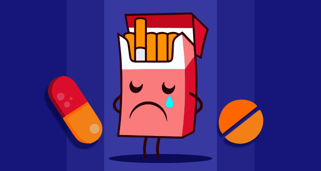

No estás solo si has tratado de dejar de fumar, pero no has podido abandonar el hábito para siempre. La mayoría de los fumadores hacen muchos intentos para dejar de fumar antes de lograr una abstinencia estable y a largo plazo.
Tienes más probabilidades de dejar de fumar para siempre si sigues un plan de tratamiento que incluya los aspectos físicos y de comportamiento de la adicción a la nicotina. Tomar medicamentos y trabajar con un consejero especialmente capacitado para ayudar a las personas a dejar de fumar (un especialista en el tratamiento del tabaquismo) aumentará significativamente tus posibilidades de éxito.
Pídele a tu equipo de atención médica que te ayude a desarrollar un plan de tratamiento que funcione para ti o que te aconseje dónde obtener ayuda para dejar de fumar.

| ANTES | MENU |